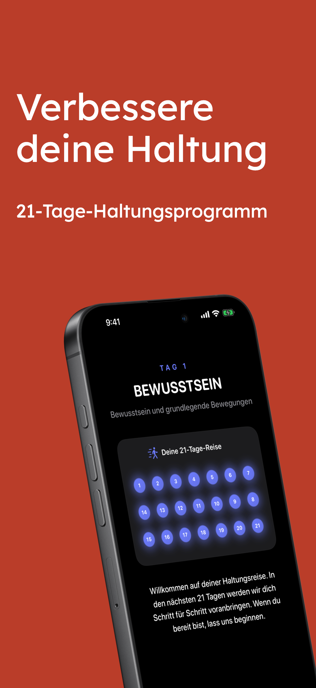
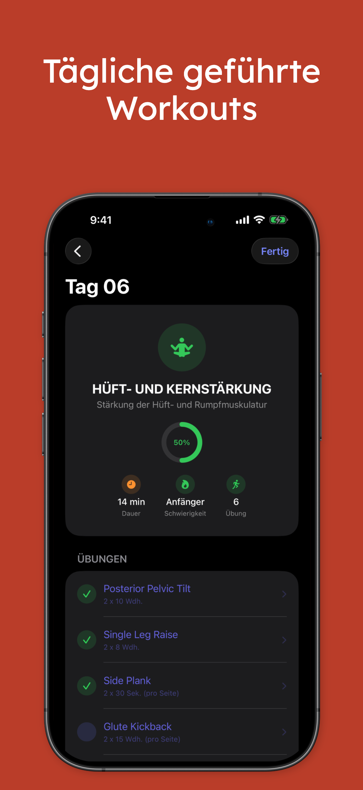
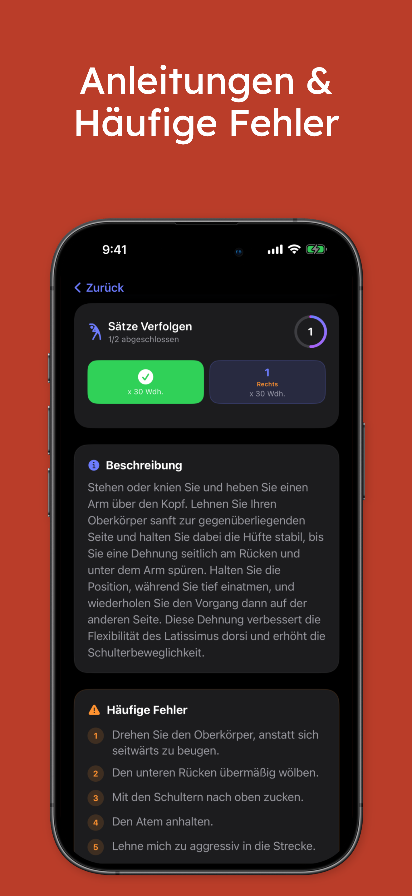
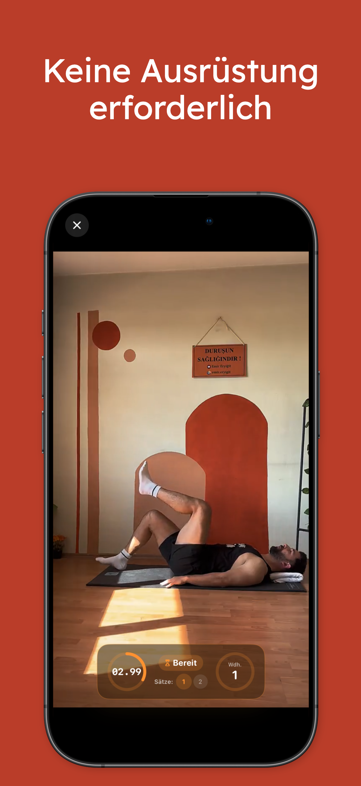
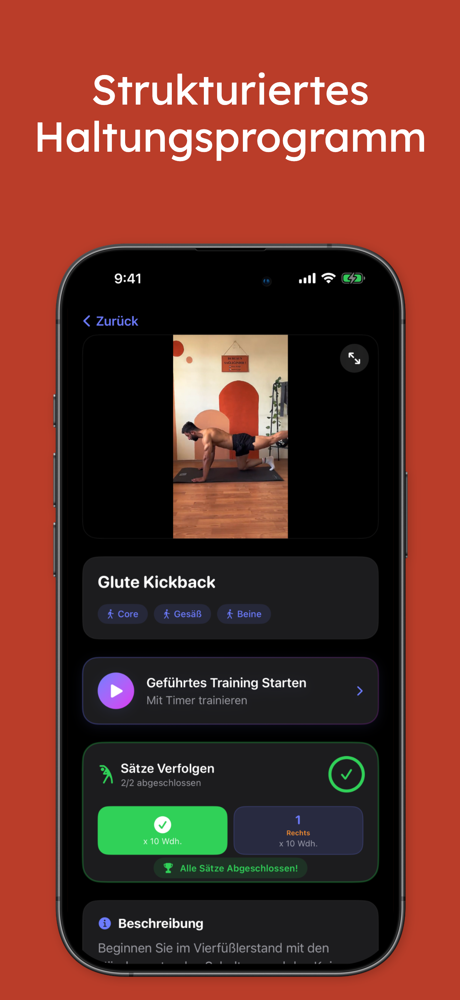
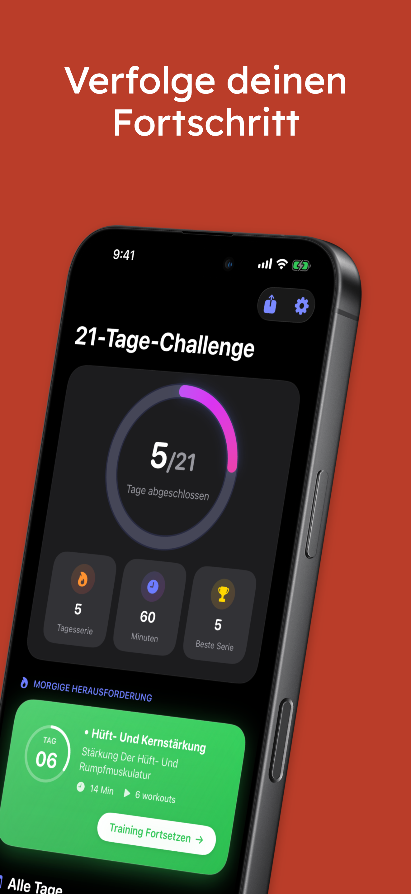
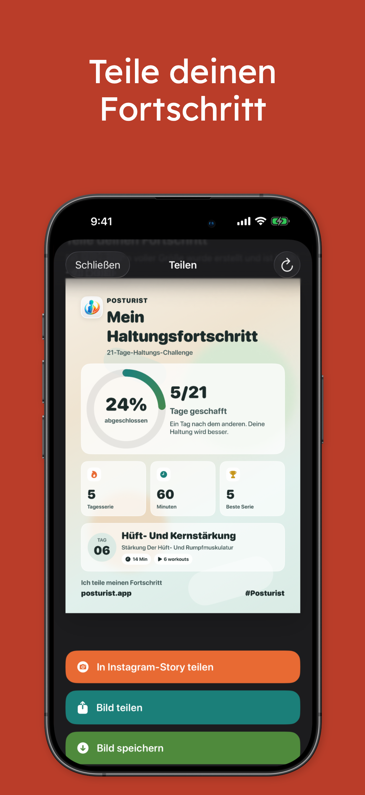

Folge einer klaren Haltungsreise
Ein einfacher Fortschritt von Bewusstsein bis Kräftigung hilft Nutzerinnen und Nutzern, dranzubleiben und den nächsten Schritt zu kennen.
Posturist hilft dir, deine Haltung Schritt für Schritt zu verbessern – mit einer strukturierten Challenge, klarer Übungsanleitung, Fortschrittsverfolgung und motivierenden täglichen Sessions.

Ein einfacher Fortschritt von Bewusstsein bis Kräftigung hilft Nutzerinnen und Nutzern, dranzubleiben und den nächsten Schritt zu kennen.
Übungsansichten, Timer, Wiederholungen und Satzverfolgung machen jedes Workout von Anfang bis Ende leicht nachvollziehbar.
Abschlussstatistiken, Streaks und teilbare Fortschrittskarten machen Beständigkeit sichtbar und motivierend.
Aus App-Struktur und Screenshots wirkt Posturist wie ein geführtes Produkt zum Aufbau von Gewohnheiten: ein sauberer Onboarding-Fluss, ein Challenge-basiertes Erlebnis, tägliche Benachrichtigungen und ein starker Fokus auf Fortschritt.


Minimales Design, dunkle UI, starke Fortschrittsvisuals und praktische Übungen lassen das Produkt hochwertig und zugänglich wirken.
Kurze Sessions, die in den Alltag passen – zu Hause, in einer Pause oder nach dem Training.
Die Übungen sind in einem Plan organisiert, reduzieren Entscheidungsstress und helfen beim Dranbleiben.
Abschlussringe, Streaks, Minuten und kommende Sessions halten die Motivation hoch.
Beschreibungen und häufige Fehler helfen dabei, Bewegungen sicherer und effektiver auszuführen.
Ein schneller Blick auf den Challenge-Ablauf, geführte Workouts, Übungsdetails und teilbare Fortschrittsansichten.




Wenn du möchtest, kann diese Landingpage als Nächstes mit App-Store-Links, Testimonials, FAQ, Datenschutzseite und Kontaktformular erweitert werden.